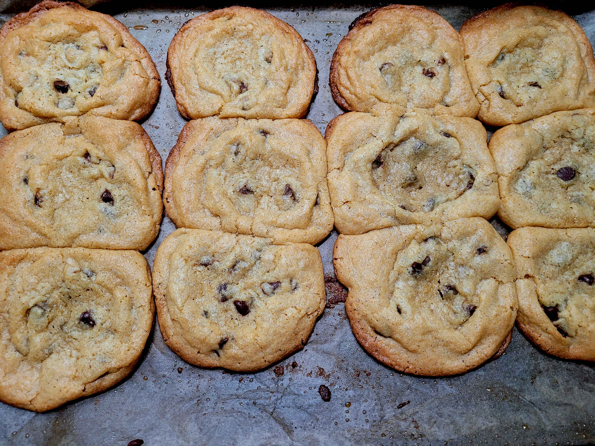

Cookies

Back to Home
I uniroincally got this reicpie from a friend, so instead of two paragrpahs explaining the recipie
youre instead getting two paragraphs from the bee movie script. Because I'm not writing about
something that I already know about, its also more humerous. According to all known laws of aviation, there is no way a bee should be able to fly.
Its wings are too small to get its fat little body off the ground.
The bee, of course, flies anyway because bees don't care what humans think is impossible.
Yellow, black. Yellow, black. Yellow, black. Yellow, black. Ooh, black and yellow.
Let's shake it up a little. Barry! Breakfast is ready! Coming! Hang on a second. Hello? Barry? Adam?
Can you believe this is happening? I can't. I'll pick you up. Looking sharp.
Ingredients
- A stick of butter (about half a cup)
- ½ cup of white sugar
- ¾ cup of brown sugar
- A teaspoon of vanilla
- One egg
- A pinch of baking powder
- 1 and ¼ cup of flour
Steps
- Room temp butter, cream it with the sugar until combined into wet sand texture
- Add your vanilla and egg and mix until well combined again and the mixture falls off the whisk in ribbons
- Add your baking powder and flour and mix again. (Don't worry if it seems too wet.)
- Add in your chocolate chips or chunks or both
- Mix again and let the dough rest for at least 30 minutes. It'll firm up into a rollable dough
- Scoop 12 cookies with your hand or an ice cream scoop and put them on a tray with greased parchment paper
- Bake at 350⁰F for 13 minutes and that's it
Back to Home